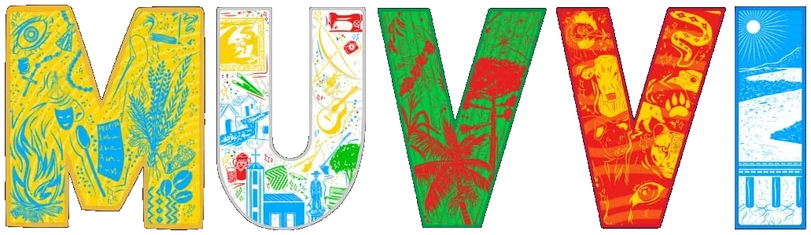
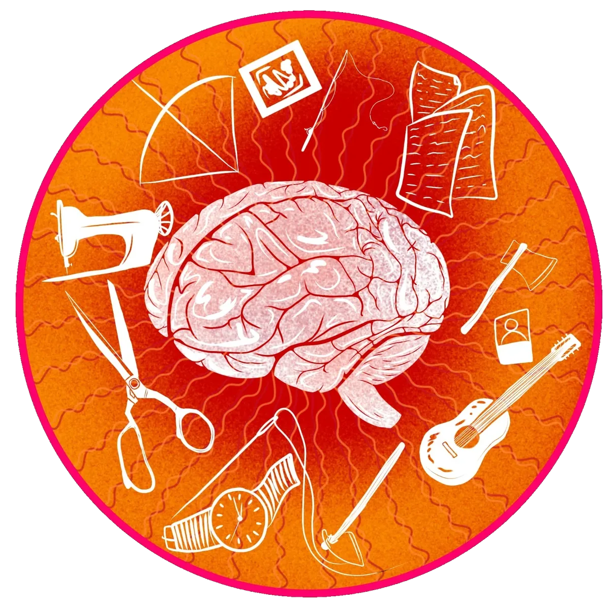
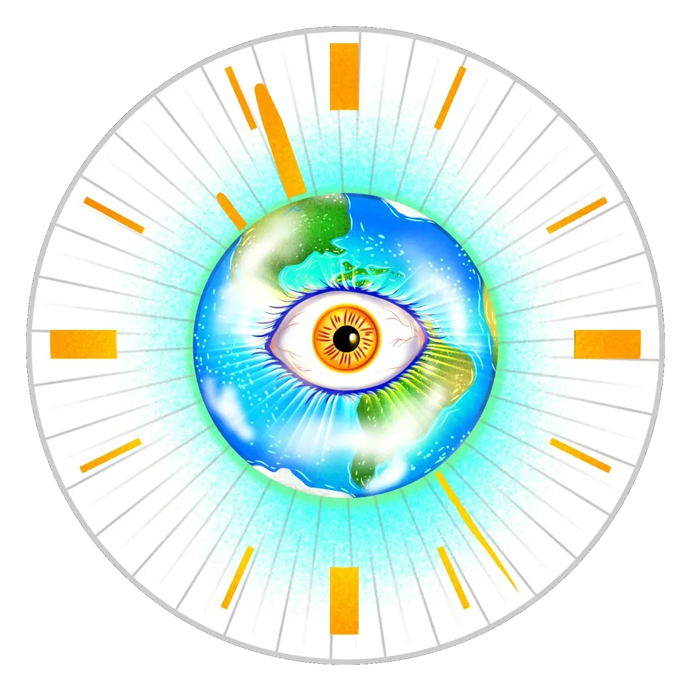
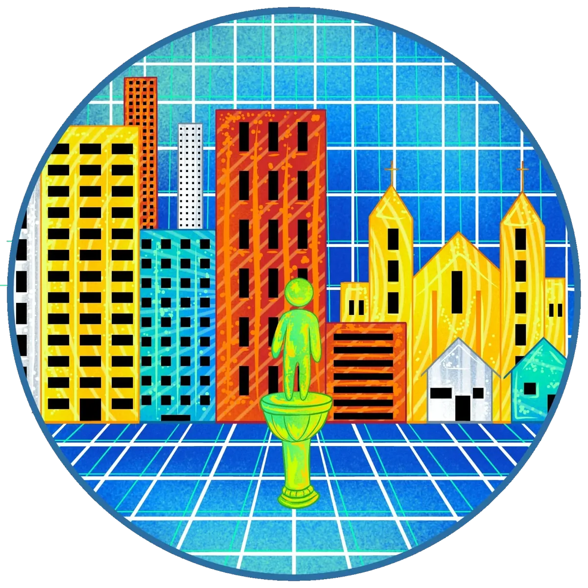
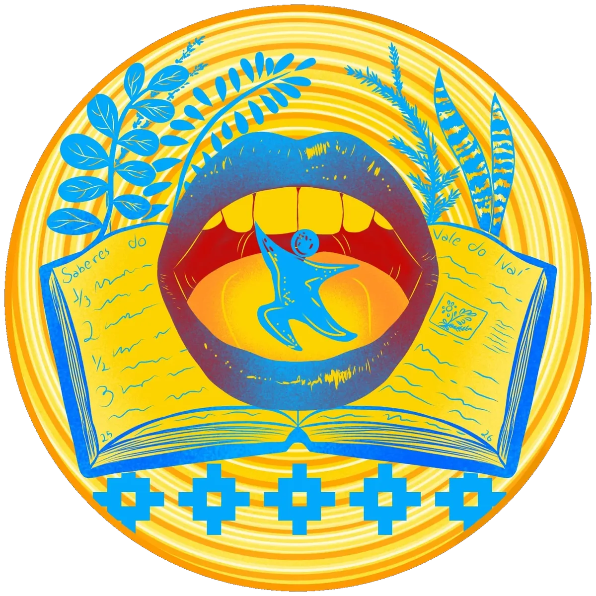
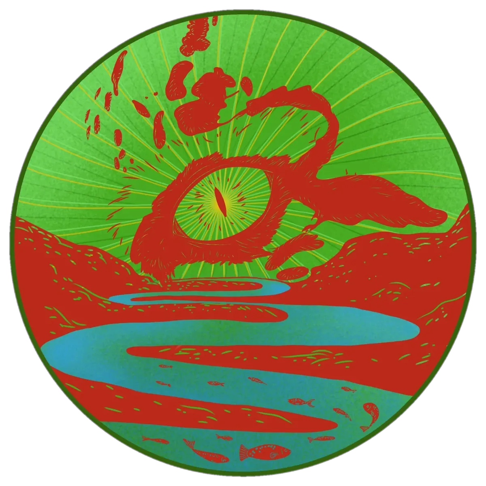

Apucarana ◆ Arapuã ◆ Ariranha do Ivaí ◆ Bom Sucesso ◆ Borrazópolis ◆ Califórnia ◆ Cambira ◆ Cruzmaltina ◆ Faxinal ◆ Godoy Moreira ◆ Grandes Rios ◆ Ivaiporã ◆ Jandaia do Sul ◆ Jardim Alegre ◆ Kaloré ◆ Lidianópolis ◆ Lunardelli ◆ Marilândia do Sul ◆ Marumbi ◆ Mauá da Serra ◆ Novo Itacolomi ◆ Rio Bom ◆ Rio Branco do Ivaí ◆ Rosário do Ivaí ◆ São João do Ivaí ◆ São Pedro do Ivaí
Patrimônio Histórico
Fotografias, cartas, documentos, objetos de família, ferramentas de trabalho e coleções particulares ou comunitárias são testemunhos das experiências de pessoas e grupos que participaram da construção histórica do Vale do Ivaí. Esses bens permitem conhecer diferentes aspectos da vida cotidiana, das relações de trabalho, das transformações sociais e das memórias familiares e coletivas. O patrimônio histórico não se limita aos acontecimentos oficiais ou às trajetórias de personagens considerados importantes. Ele também está presente nas histórias de pessoas comuns, nos objetos guardados por afeto e nas lembranças compartilhadas entre gerações. Conhecer esse patrimônio é reconhecer a diversidade de sujeitos e experiências que constituem a história da região.
Patrimônio Arqueológico
O patrimônio arqueológico é constituído pelos vestígios materiais das atividades humanas que permitem investigar diferentes modos de vida ao longo do tempo. Objetos de pedra, fragmentos de cerâmica, estruturas, marcas na paisagem e outros vestígios ajudam a compreender a presença e as experiências dos grupos humanos que ocuparam o território. No Vale do Ivaí, os sítios arqueológicos e as coleções domésticas revelam histórias que antecedem a formação dos municípios atuais, especialmente aquelas relacionadas às populações indígenas. Conhecer esse patrimônio significa reconhecer a profundidade temporal da ocupação humana na região, valorizar a diversidade de seus habitantes e compreender a importância da pesquisa e da preservação dos vestígios arqueológicos.
Patrimônio arquitetônico
Casas, igrejas, capelas, pontes, estações ferroviárias, edifícios públicos e outras construções fazem parte das paisagens do Vale do Ivaí. Suas formas, materiais, técnicas construtivas e diferentes usos expressam aspectos das transformações históricas, sociais e culturais da região. Entretanto, o valor de uma construção não está apenas em sua antiguidade, monumentalidade ou estilo arquitetônico, mas também nos sentidos e nas memórias que as pessoas lhe atribuem. Uma casa de família, uma antiga escola ou um espaço de encontro podem constituir importantes referências culturais para uma comunidade. Conhecer o patrimônio arquitetônico é, portanto, compreender as relações entre os espaços construídos, as experiências humanas e as memórias dos lugares.
Patrimônio Imaterial
O patrimônio imaterial está presente nos saberes, fazeres, celebrações, formas de expressão e práticas culturais que as comunidades reconhecem como parte de suas referências culturais. No Vale do Ivaí, ele pode ser encontrado nas festas populares e religiosas, nas músicas, nas danças, nas receitas de família, nas histórias contadas, nos conhecimentos tradicionais e nos diferentes modos de viver e de se relacionar com o território. Transmitidas, compartilhadas e recriadas ao longo do tempo, essas manifestações expressam a diversidade cultural da região. Conhecer o patrimônio imaterial é reconhecer as pessoas como produtoras e detentoras de conhecimentos, valorizando as práticas que dão sentido à vida coletiva e às experiências de pertencimento.
Patrimônio Natural
Rios, cachoeiras, florestas, formações rochosas, animais e plantas compõem o patrimônio natural e fazem parte das paisagens que caracterizam o Vale do Ivaí. Mais do que elementos da natureza, essas paisagens podem carregar histórias, memórias e significados para as comunidades que com elas convivem. O Rio Ivaí, que dá nome à região, é um importante elemento dessa paisagem, relacionado aos modos de vida, ao trabalho, às travessias e às experiências de diferentes gerações. Conhecer o patrimônio natural é também compreender as relações que as pessoas estabelecem com o ambiente, reconhecendo seus valores ecológicos, paisagísticos, históricos e culturais, bem como a importância de sua preservação.
Uma paisagem, um rio, uma construção, uma festa, uma lembrança de infância? Quais lugares, objetos, saberes e histórias fazem parte da sua memória e ajudam a construir sua relação com esse território? Foi a partir dessas perguntas, propostas aos estudantes do primeiro ano do curso de História da Universidade Estadual de Maringá (UEM), no Campus Regional do Vale do Ivaí (CRV), durante a disciplina de Patrimônio Cultural, entre 2025 e 2026, que nasceu a ideia do Museu Virtual do Vale do Ivaí (MUVVI). As reflexões produzidas em sala de aula revelaram a importância de olhar para o Vale do Ivaí a partir das referências culturais das pessoas que nele vivem, reconhecendo a diversidade de experiências, memórias e identidades que constituem sua paisagem cultural. O MUVVI nasceu, assim, como uma proposta de museu colaborativo, dedicado à identificação, à documentação, à pesquisa e à divulgação do patrimônio cultural e natural do Vale do Ivaí. Entendemos que o patrimônio não se limita aos grandes monumentos, às construções antigas ou aos bens oficialmente reconhecidos. Ele também está presente nos lugares cotidianos, nos objetos guardados pelas famílias, nas celebrações, nos saberes transmitidos entre gerações, nas paisagens e nas histórias que atribuem sentidos aos territórios. Mais do que apresentar o patrimônio do Vale do Ivaí, queremos construir um espaço de diálogo entre a universidade e as comunidades, no qual diferentes pessoas possam compartilhar suas memórias, reconhecer suas referências culturais e participar da construção de narrativas sobre a região. Este museu é um convite para conhecer, compartilhar e reconhecer as múltiplas histórias do Vale do Ivaí. Porque o patrimônio cultural também é aquilo que faz sentido para você.
O que faz você pertencer ao Vale do Ivaí?

Museu Virtual do Vale do Ivaí




